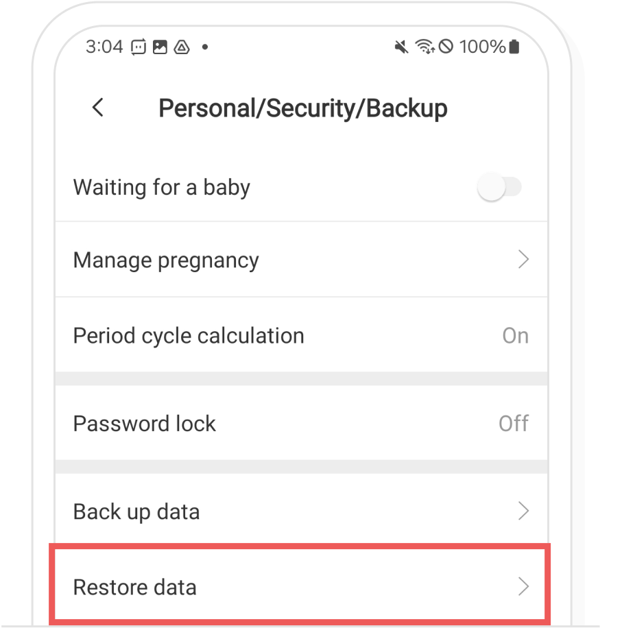
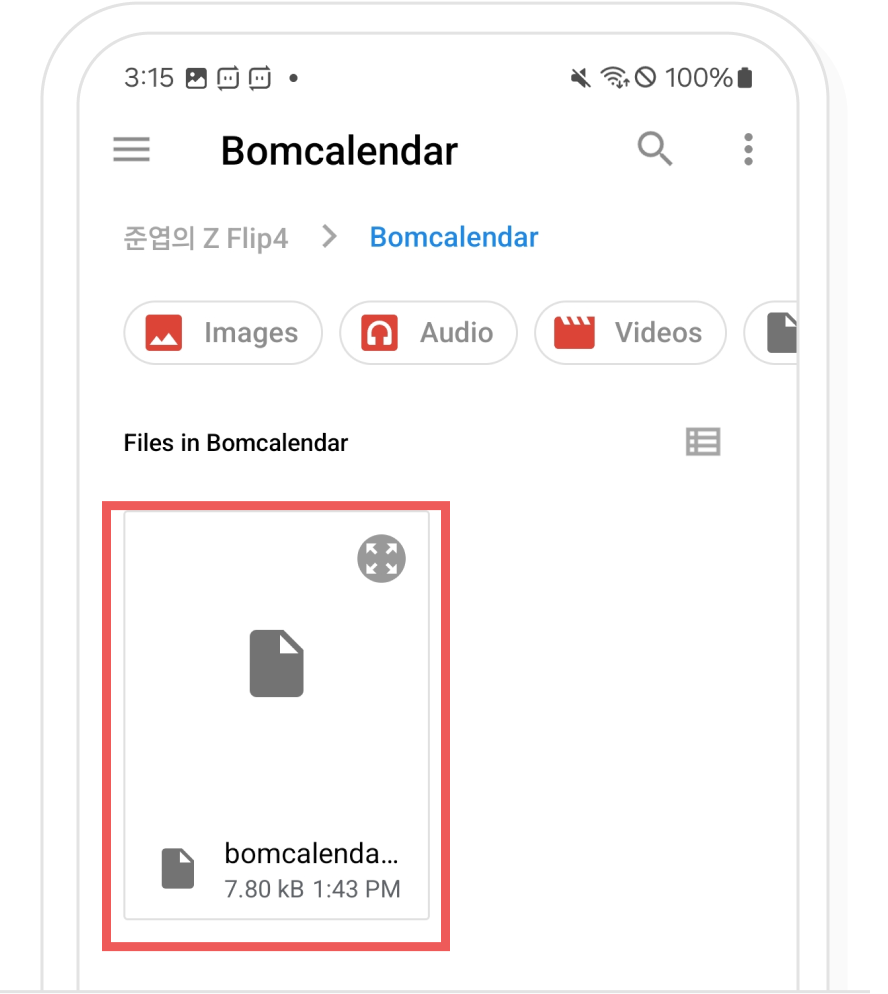
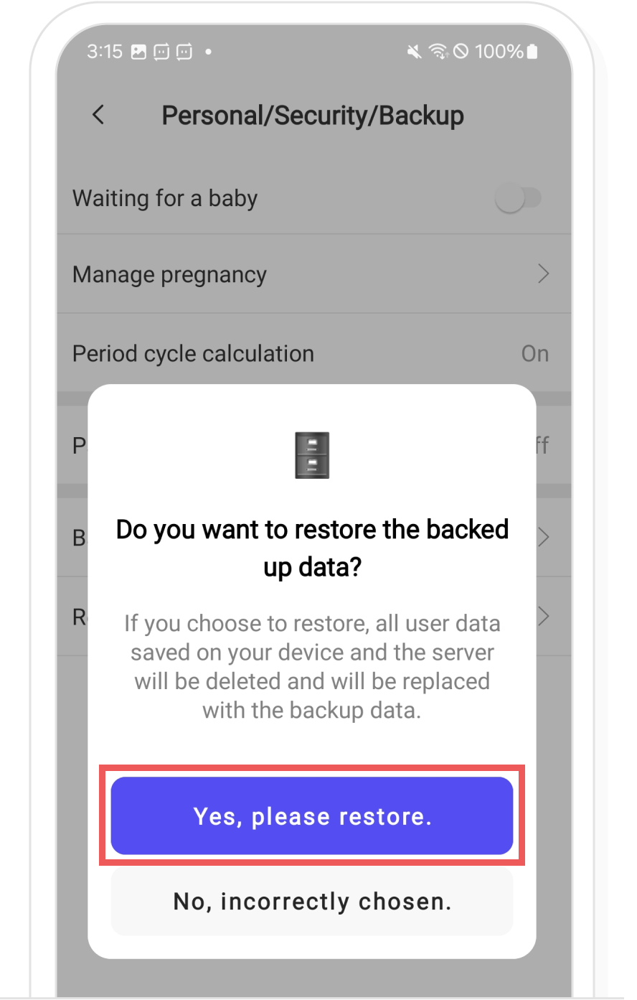

-
If you backed up via email, please select the email and download the attached back up data file.

In the Bom Calendar Settings > ‘Personal/Security/Backup’, please select ‘Restore data’.
Please select the file to restore.
In the restore confirmation popup, select the ‘Yes, please restore’ button to complete the restoration.
